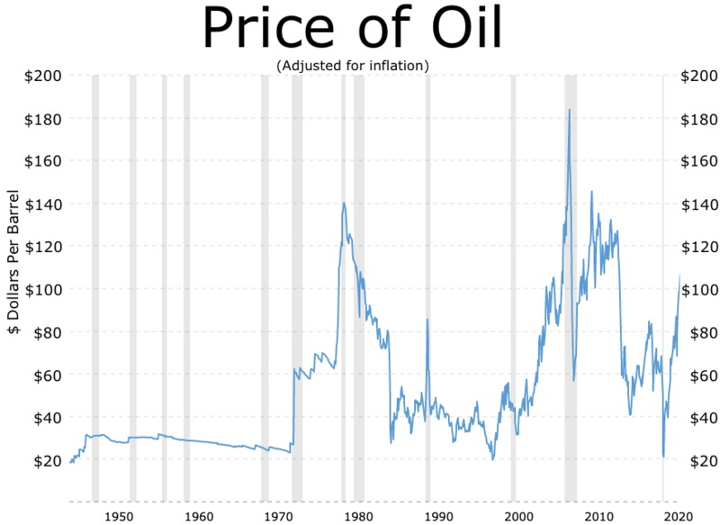
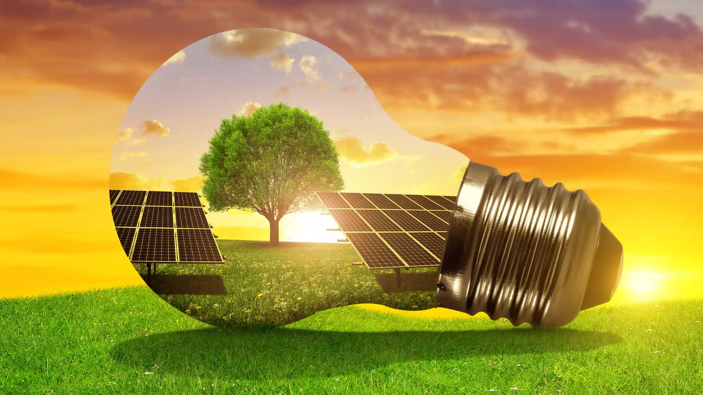
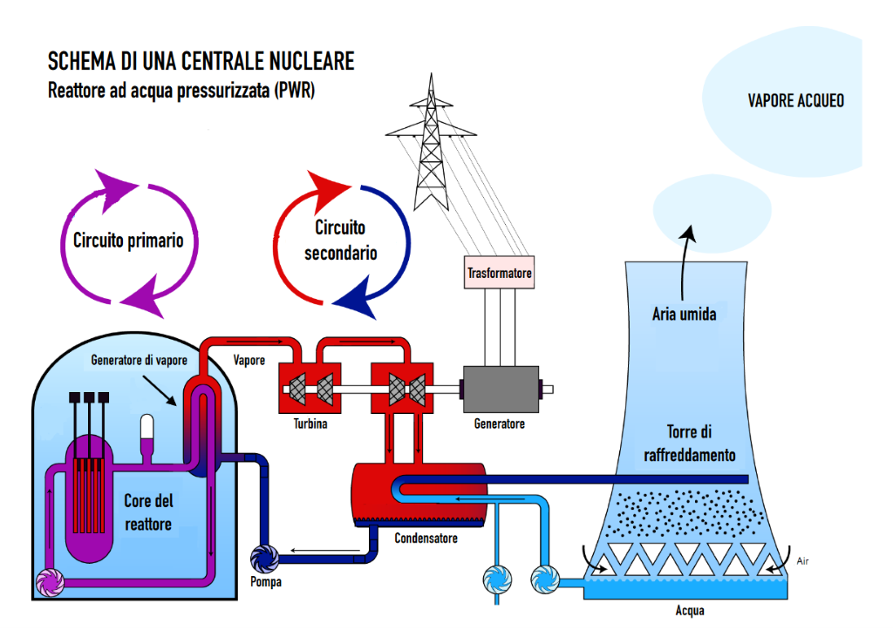

Crisi Petrolifera del 1973
Il momento che ha più segnato le problematiche legate ai carburanti fossili è stata senza dubbio la crisi petrolifera del 1973, dove i maggiori produttori di petrolio arabi dichiararono un embargo verso gli Stati Uniti, ciò era dovuto dal loro supporto per l’Israele durante la quarta guerra tra Israele e i paesi arabi.
Questo disastro diplomatico fece incrementare i prezzi del petrolio addirittura del 300%, dovuto dalla difficile reperibilità della risorsa stessa, essendo che il petrolio è usato in innumerevoli contesti, è chiaro che l’aumento dei prezzi fu anche la causa di un abbassamento della produttività mondiale e quindi a sua volta un crollo economico globale.
Gli eventi sopra citati dimostrano che il petrolio non è sostenibile, non solo per il suo impatto ambientale, ma anche per il fatto che essendo una risorsa limitata, il suo esaurimento porterà inevitabilmente a una crisi economica mai vista prima e quindi il possibile inizio di conflitti mondiali.
E’ ovvio quindi che bisogna cercare fonti di energia alternative e sostenibili per evitare che ciò accada.

Le fonti energertiche
“Le fonti energetiche sono le sorgenti di energia a disposizione, e in quanto tali possono essere utilizzate
per eseguire un lavoro e/o produrre calore”
Gran parte dell’energia proviene in maniera diretta e non dal sole, come l’energia solare, che permette di
convertire direttamente (grazie ai pannelli al silicio) i raggi solari in energia, senza dover ricorrere alla
trasformazione in “lavoro” o alla combustione come avviene per le risorse fossile (carbone, idrati, gas,
petrolio…) le quali, grazie ai raggi solari assorbiti dalla superfice terrestre, le piante e resti fossili (cioè
biomasse) riescono a degradarsi al di sotto del terreno diventando risorse fossili, ma è un processo che
richiede milioni di anni, oltre ad essere fortemente inquinante.
Ancora prima di parlare delle fonti energetiche e meglio fare una distinzione dell’energia, tra rinnovabili e
non rinnovabili (o limitate).
L’energia rinnovabile (eolico, solare, idro elettrico, geotermico…) sono fonti che permettono il riutilizzo
della medesima fonte, poiché la sua provenienza è “inesauribile”.
L’energia non rinnovabile (carbone, uranio, petrolio…) sono fonti ad un potenziale maggiore di energia, ma
sono presenti in quantità limitata…
Ma il carbone è rinnovabile…
Tuttavia, i termini rinnovabile e non rinnovabile sono sbagliati, poiché entrambi sono rinnovabili ma, le fonti non rinnovabili sono tali perché il
tempo d’attesa per il consumo della medesima risorsa è molto più esteso della rinnovabile, che a volte
neanche viene consumata ma è la risorsa stessa a generare energia e noi a sfruttarla.
Fonti rinnovabili
-
Energia solare:L’energia solare viene provocata dal sole stesso, che oltre a far luce emette calore. Esistono tre tipi di impianti, il fotovoltaico che trasformano i raggi solari in energia, ma essendo soggetti all’orario e ad un certo clima, non sono sempre adatti, per tanto la loro produzione è soggetta a intemperie, sia per la fragilità del prodotto che per la produzione di energia che non supera il 45% dell’energia potenziale. Il solare Termico, che tende ad essere usato non per la produzione di energia ma di acqua calda, anzi che l’uso di impianti a gas. Solere Termodinamica (Progetto Archimede), la quale e composta da diversi pannelli che reindirizzano i raggi solari in un unico punto (di solito sopraelevato per facilitare il re indirizzamento dei raggi) dove è presente un fluido termovettore (Progettato da Carlo Rubbia, fisico italiano, presidente di ENEA i collaborazione con un agenzia spagnola, entrambe produttrici di energia elettrica), che, grazie ad uno scambiatore termico, trasferisce il calore a dell’acqua che genera vapore, possono raggiungere i 550°C.
-
Energia Eolica:l’energia eolica è una delle più antiche, dal VII° secolo d.C. che viene sfruttata (mulini a vento, navi a vela), ed al giorno d’oggi la sfruttiamo per produrre energia. Queste turbine eoliche sono dotate di un rotore e tre pale eoliche che vengono mosse dal vento, per quanto semplice è il funzionamento, riesce a soddisfare solo lo 0,3% del fa bisogno mondiale. La loro “compattezza” gli permette di essere edificare in aree remote (isole o aree rurali impervie), in oltre non sono gradite vicino le abitazioni per possibili danni che causano in caso di danno all’infrastruttura e generano un forte rumore, motivo per qui vengono posizionati lontani dalle abitazioni e dai centri popolati.

-
Energia Idroelettrica:L’energia Idroelettrica soddisfa il 16% della richiesta giornaliera d’energia. Il funzionamento di una centrale idroelettrica è semplice, è una turbina che viene spinta verso il basso dall’acqua, di solito per facilitare lo sfruttamento della risorsa si usano dei salti naturali (cascate, fiumi) ma molti casi si fa ricorso a edificare dighe, così da sfruttare il processo, ma edificare dighe oltre ad essere dispendioso a livello economico, provoca un impatto all’ambiente importante (come la Diga delle tre gole in Cina).
-
Energia Geotermica:Con Energia Geotermica intendiamo un meccanismo che genera una forte forza (vapore acqueo) verso l’altro, energia rilasciata in processo di decadimento nucleare, che fa girare una turbina che genera energia. Sfortunatamente l’energia Geotermica soddisfa meno dell’1% del fa bisogno quotidiano, ma una delle prime dimostrazioni avvenne qua in Italia, grazie a Piero Ginori Conti (03/06/1865-03/12/1939, è stato un nobile un imprenditore ed un politico Italiano) che fece edificare il primo reattore Geotermico a Lardello (Provincia di Pisa, in Toscana).
-
Energia ad ardere e biomassa:Con biomassa intendiamo legname, ed è il più antico dei generatori di energia mai artificiali che l’essere umano abbia mai usato, ma al giorno d’oggi è sconsigliato per la produzione di scorie come fumi ed il consumo di ossigeno, in oltre ha come conseguenza la deforestazione del suolo terrestre, che ha come conseguenza meno flora in grado di convertire la CO^2 in O^2.
Fonti non rinnovabili
-
Energia Nucleare:Quando si parla di energia nucleare, si sta parlando della madre di tutte le energie, poiché derivano tutte (rinnovabili e non) dal reattore nucleare naturale (il Sole) che tiene ben saldo il nostro sistema solare. Grazie Hans Bethe (1906-2005 Fisico, astronomico Tedesco) nel 1938 individuò un ciclo di reazioni termonucleari all’origine dell’energia del sole e della maggior parte delle stelle (ciclo di Bethe). Individuo il processo che nelle stelle trasforma l’idrogeno in elio, ed il fatto che nelle stelle più grandi del sole l’idrogeno aveva bisogno del carbonio per trasformarsi.
-
Fissione Nucleare:Il fenomeno di fissione nucleare e provocata dalla separazione di un nucleo atomico pesante, la quale genera 2 nuclei atomici più piccoli e leggeri, la piccola quantità di massa è in grado di produrre grandi quantità di energia (oltre 172 MeV-eletroVolt). Un’ottima alternativa ai combustibili fossili, quello che verrebbe prodotto con un grammo di ossido uranio, con il petrolio ne servirebbero 40 mila volte tanto. Il minerale viene calato in una vasca d’acqua e grafite che servono in caso di emergenza a rallentare il i neutroni provocati dalla razione. In fine il refrigerante (acqua e gas) per assorbire il calore, dopo di che la centrale sfrutta il calore provocato come una centrale termoelettrica. Per il resto la fusione non provoca scorie aeree (CO^2), solo leggere scorie radioattive, ma inferiori delle fonti a energetiche fossili. Uno svantaggio e che ciò che entra in contatto col nocciolo viene investito da una gran quantità di radiazioni, in oltre la quantità di uranio a disposizione è minore rispetto al carbone e al petrolio, una soluzione sarebbe quella di costruire un reattore autofertilizzante, un prototipo e il superphénix (centrale Francese), al momento chiuso per problemi tecnici, qual ora il reattore riuscisse a rientrare in funzione si riuscirebbe a produrre molta più energia rispetto a quella che produceva la sua predecessore Phénix.
-
Fusione Nucleare:A differenza della Fissione la Fusione tende ad essere meno stabile come reazione, ma ha come vantaggio quello di generare molta più energia, perché una particella leggera (elio) entra in contatto con una più grande (idrogeno), stessa reazione che avviene per il sole, ma è dotato di una enorme massa di gas che la tiene stretta, chiamata plasma. Negli anni siamo riusciti a produrre anche noi del plasma, grazie alla reazione di due isotopi dell’idrogeno, il Deuterio e il Trizio. Ora il problema e il tempo di esposizione, la temperatura e la densità del plasma, limiti dettati dal limite di Greenwald… Per far fronte comune al problema L’America, la Cina, la Russia, L’Unione Europea, il Giappone, l’india e la corea stanno contribuendo alla realizzazione del primo proto-reattore ITER. Primo reattore a fusione nucleare, ancora non in funzione, diventerà operativo nel 2037 ed il suo scopo è quello di produrre più energia di quella che si possa consumare per avviarlo.